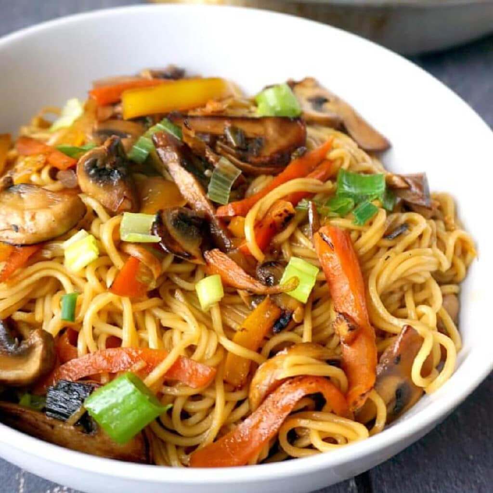

Home
Noodles
Nice photo of your soon to be noodles.

Description
Noodles are a simple, quick, and flavorful dish made with cooked noodles, fresh vegetables, and a savory stir-fry sauce. This dish is easy to make and can be enjoyed as a light meal on its own or paired with other sides.
Ingredients
- 200g noodles (any variety like egg noodles, rice noodles, or soba)
- 1 tablespoon sesame oil (or any cooking oil)
- 1 onion, thinly sliced
- 1 bell pepper, thinly sliced
- 1 carrot, julienned or thinly sliced
- 1 zucchini, thinly sliced
- 100g mushrooms, sliced
- 2-3 garlic cloves, minced
- 1 tablespoon soy sauce
- 1 tablespoon oyster sauce (optional)
- 1 tablespoon rice vinegar or lime juice
- 1/2 teaspoon sugar
- Salt and pepper to taste
- A handful of fresh cilantro (optional, for garnish)
- Sesame seeds (optional, for garnish)
- Green onions (optional, for garnish)
Instructions
-
Cook the noodles
- Cook the noodles according to package instructions. Drain and rinse under cold water to stop them from cooking further, then set aside.
-
Prepare the stir-fry sauce
- In a small bowl, mix the soy sauce, oyster sauce (if using), rice vinegar (or lime juice), and sugar. Set aside.
-
Stir-fry the vegetables
- Heat the sesame oil (or any oil) in a large skillet or wok over medium-high heat.
- Add the sliced onions and sauté for 2 minutes, until softened.
- Add the minced garlic and cook for another 30 seconds, until fragrant.
- Add the bell pepper, carrot, zucchini, and mushrooms. Stir-fry for 3-4 minutes, until the vegetables are tender but still crisp.
-
Combine the noodles and sauce
- Add the cooked noodles to the skillet with the vegetables.
- Pour the stir-fry sauce over the noodles and toss everything together to coat the noodles in the sauce.
- Stir-fry for an additional 2 minutes to ensure everything is heated through.
-
Serve
- Plate the noodles and garnish with fresh cilantro, sesame seeds, and green onions, if desired.
Enjoy your delicious noodles! A quick, easy, and flavorful dish that’s perfect for a satisfying meal.